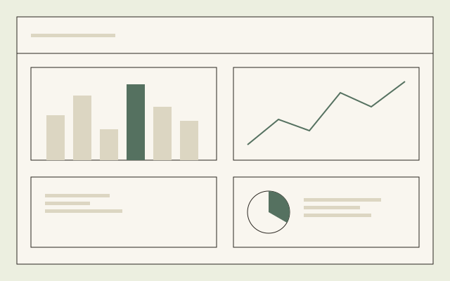

4
Three CROs and one global pharma.
Case
A toxicology data product, taken from beta to MVP in customers’ own hands.
Project
Instem
Product Designer
10-week programme
Product Design
In their words
“In one page you have all for this animal, so you can compare… it is really, really useful.”
Study Director
“We have truly felt that you have valued all our feedback… a true pleasure working with you.”
Written feedback
Preview

At a glance
4
Three CROs and one global pharma.
10
In their own environment, on their own work.
18
Roughly 21 hours with around 26 customer participants.
121
Scored and prioritised for the MVP release.
Overview
Turn a crowded proof-of-concept into a focused MVP, and prove it with real customers before the full build.
Study data lives in a GLP system of record, and getting insight out of it is slow and manual. Our proof-of-concept could visualise some of it, but had more graphs than anyone could use. My first design job was subtraction: five core graphs, matched to how a scientist actually reviews a study.
I owned the design research and the design of the MVP, from framing the questions to a prioritised plan for the release.
Constraints
A support tool, never a record itself, and demonstrably faithful to the raw data.
I kept the white-labelling in line with our in-house design system: the type, colour, components and patterns of the rest of the suite. Anything that looks bolted on makes people doubt the data too.
The challenge
Reviewing a study meant exporting data, rebuilding tables and graphs in Excel, and pasting screenshots into PowerPoint. Slow, error-prone, and static at the end of it. Three groups carried the cost:
The goal was never to replace expert judgement. It was a faster, trustworthy second pair of eyes.
In their words
“It’s a dead PDF, so you cannot click on any data point… you have to sit with multiple PDFs open to get the same information.”
Study Director
The programme
Not a workshop or a screen review. Four customers lived with the beta in their own environment, on their real work.
I ran one plan the same way for all four: the same questions, the same studies and graphs, one analysis framework. That made 554 datapoints comparable. I turned them into 121 opportunities scored by customer value, so the roadmap followed evidence rather than the loudest voice.
The MVP
The clearest win was the subject view: everything about one animal on a single page.
Lab results, body weight, clinical incidence and pathology findings sit together instead of across separate tables. Around it, interactive lab graphs make outliers jump out in seconds, and I designed for trust:
Subject view
Raised by a customer in an early session.
Designed with the cohort.
Released mid-programme.
Praised by all four organisations.
Heat map
Pathologists called my first heat map “messy”. They were right.
Pathologists in three of the four organisations pushed back, so I reframed it and held it out of the MVP, rather than ship a graph the experts wouldn’t trust.
Revision
Findings
Key signal
Is this normal?
A liver enzyme reading or an organ weight means little until you can compare it with what’s normal. That comparison is historical control data. All four organisations raised it independently, as a must-have before they would switch tools: “the basis for everything”.
The design implication: overlay those ranges on the core graphs, so a bare number becomes an answer.
The outcome
The MVP led with what the research proved, and made trust visible.
The subject view, interactive lab graphs, filtering and shareable links shipped to the early-adopter cohort, read-only with visible provenance. The contested heat map waited for its redesign.
It launched without tracking, so there are no impact figures yet. Next comes proving it, starting with time to insight and reporting time saved, and a deep dive into historical control data.
Hindsight
Next
Get in touch